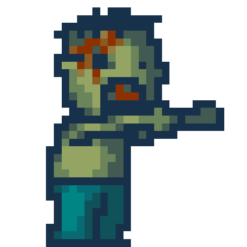

<nav class="navbar navbar-inverse navbar-fixed-top">
    <div class="container-fluid">
      <div class="navbar-header">
        <button type="button" class="navbar-toggle collapsed"
                data-toggle="collapse" data-target="#navbar"
                aria-expanded="false" aria-controls="navbar">
          <span class="sr-only">Toggle navigation</span>
          <span class="icon-bar"></span>
          <span class="icon-bar"></span>
          <span class="icon-bar"></span>
        </button>
        <a class="navbar-brand" href="#">{{title}}</a>
        <p class="navbar-text navbar-right">Score: {{score}}</p>
        <p *ngIf="timerEnabled" class="navbar-text navbar-right ">  {{timerValue}}</p>
      </div>
      <div id="navbar" class="navbar-collapse collapse">
        <ul class="nav navbar-nav navbar-right">
          <li><a routerLink="/about" routerLinkActive="active">About</a></li>
        </ul>
      </div>
    </div>
</nav>

<div >
<div class="col-sm-9 col-sm-offset-3 col-md-10 col-md-offset-2 main">
  <!-- Routed views go here -->
  <div class="page-text">

      <div id="outside">
        <router-outlet></router-outlet>
      </div>
  </div>
</div>

<footer class="footer">
</footer>
</div>
